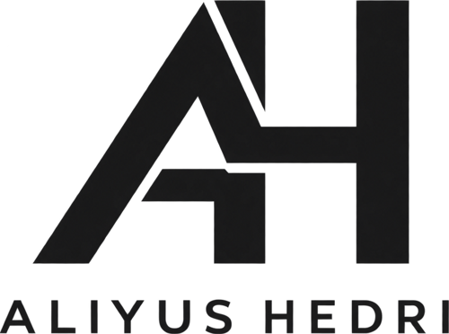
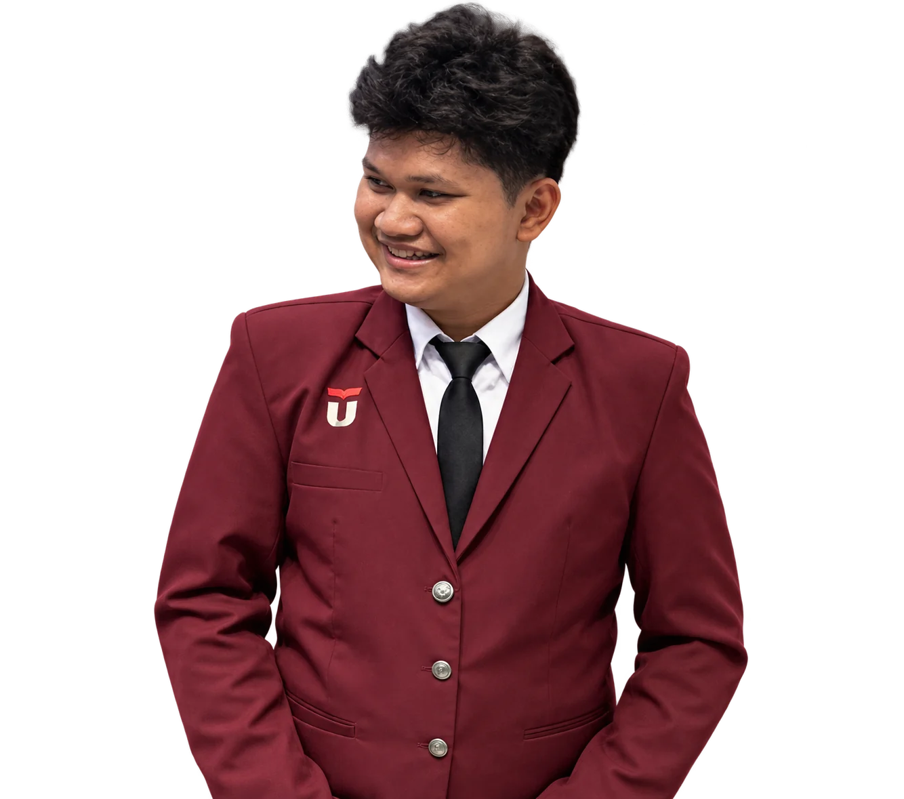
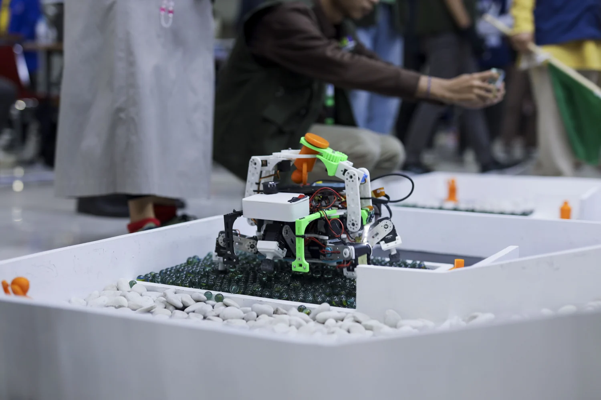
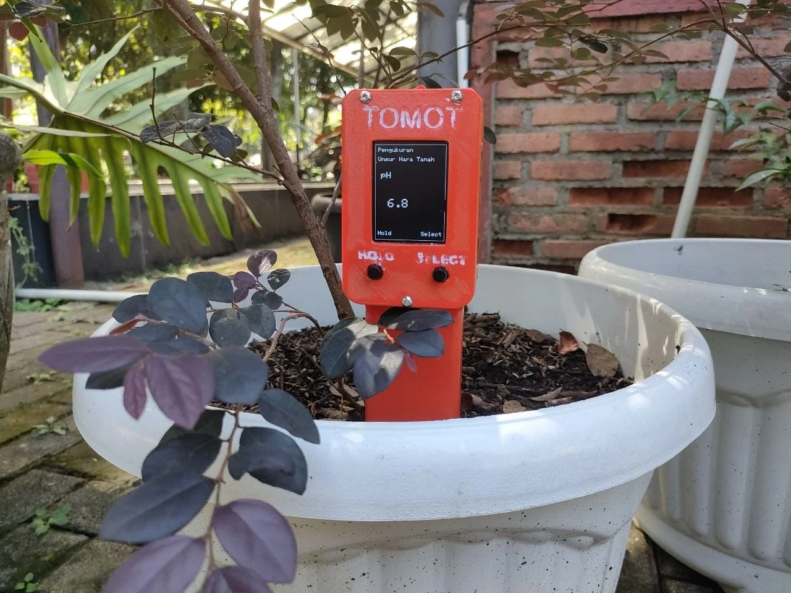
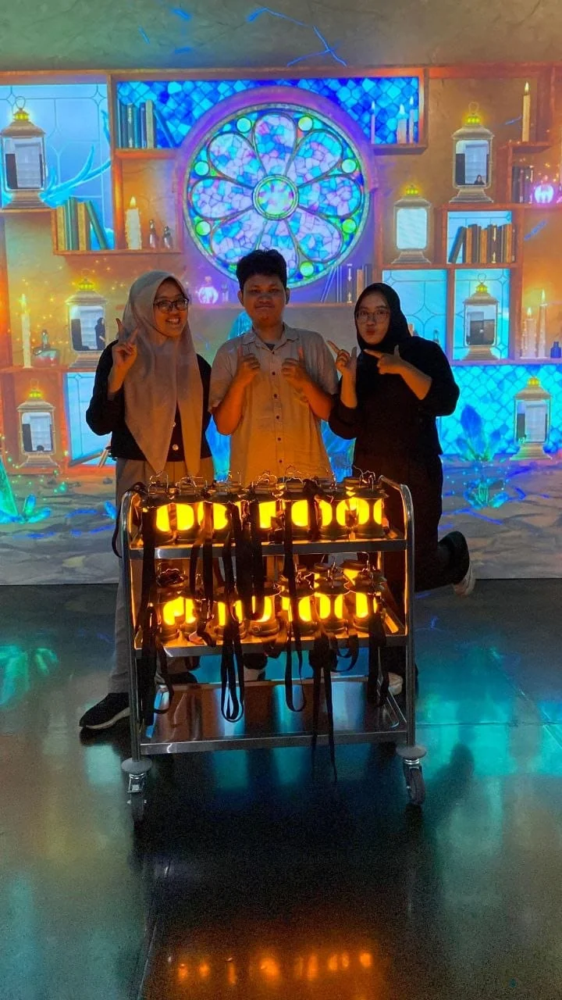
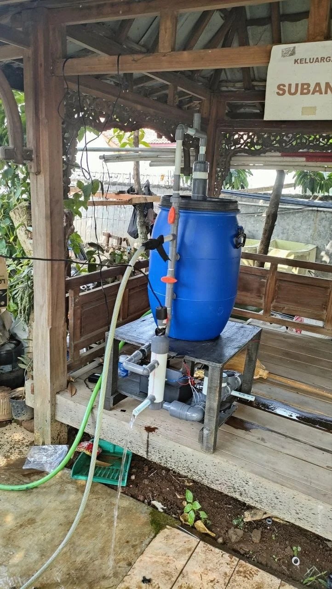

30 Jun–9 Aug 2025
Mechatronics Engineer Intern
PT Arthatronic Studio Teknologi
The CV records this internship period; the supplied documents do not list specific individual deliverables.

Robotics & Embedded Systems
Electrical Engineering master's student at Telkom University working across robotics, SLAM, embedded systems, IoT, and AI.
Bandung, West Java, Indonesia

Documented projects across robotics, embedded systems, IoT, and mechatronics from 2023 to 2025.
4 projects shown

Automatic IMU-based balance and real-time YOLOv8 object detection for a six-legged robot.
View project
A portable soil monitoring stick for checking parameters used in fertilization decisions.
View project
Installation documentation from an internship at PT Arthatronic Studio Teknologi.
View project
An ESP32 prototype that sends pH, temperature, and turbidity readings to a cloud dashboard.
View projectI am an Electrical Engineering master's student in Telkom University's Master by Research program. My documented work covers robotics, SLAM, embedded systems, IoT, and AI.
Project records include leading Team ARJUNA, building monitoring prototypes, and an internship as a Mechatronics Engineer. The pages identify the documented scope and outcomes for each project.
See curriculum vitaeROS2, SLAM, sensor fusion, mobile and legged robots, YOLOv8, and OpenCV.
C/C++, ESP32, STM32, Raspberry Pi, IMU, camera, distance, and environmental sensors.
Python, MQTT, HTTP/REST API, Wi-Fi, Git, Linux, and MATLAB/Simulink.
Industry, laboratory, and organizational roles recorded in the CV.
30 Jun–9 Aug 2025
PT Arthatronic Studio Teknologi
The CV records this internship period; the supplied documents do not list specific individual deliverables.
2024–2025
Electronics & Intelligence Robotics Research Group
Coordinator for the Electronics & Intelligence Robotics Research Group.
2023–2025
Telkom University
Computer Basics Laboratory Assistant at Telkom University.
2023
Telkom University
Committee member for Telkom University's PKKMB in 2023.
Formal education recorded in the CV.
In progress
Master by Research · Telkom University
2022–2026
Telkom University · GPA 3.8
APERTI BUMN 2022 scholarship recipient.
2019–2022
Science track
Graduated with good standing.
My current master's research focuses on LiDAR-inertial odometry and SLAM for mobile robots.
A 2026 AGV project adapts FAST-LIO to four low-cost RGB-D Kinect V1 cameras and distributes computation between an STM32 and a Mini PC on ROS2 Jazzy.
Selected competition and academic recognition recorded in the certificates and CV.
Additional record: participant in PIMNAS 2025, PKM-KI1, with TIRNARA.
Download the current curriculum vitae in English or Bahasa Indonesia.
For opportunities and collaboration in robotics, embedded systems, IoT, or related research.